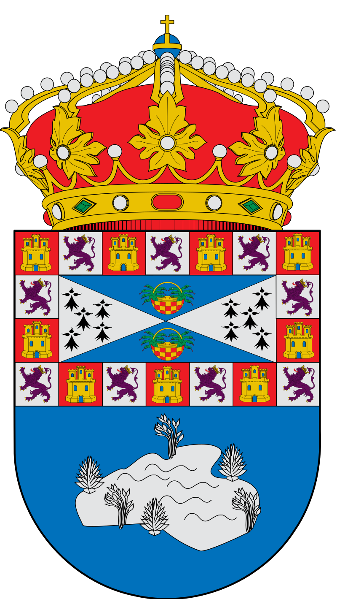
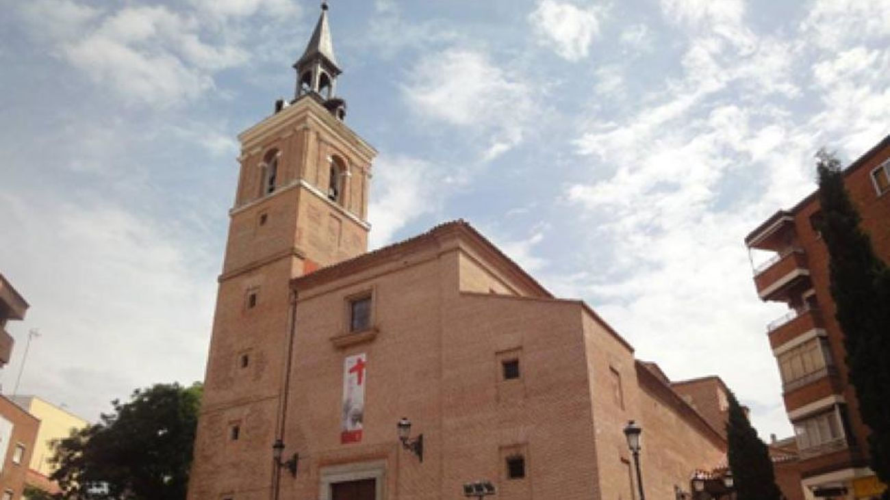
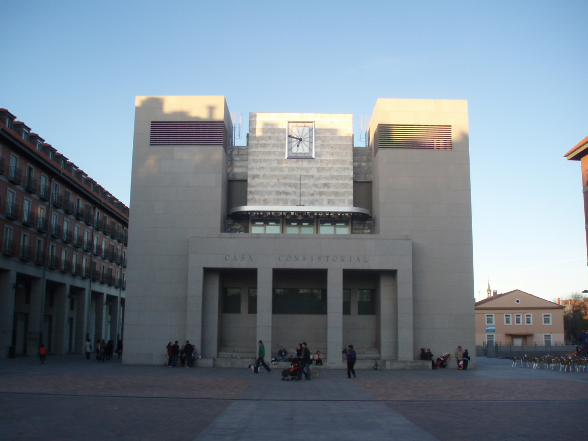
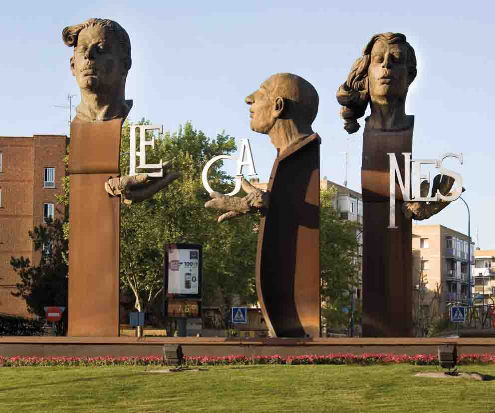
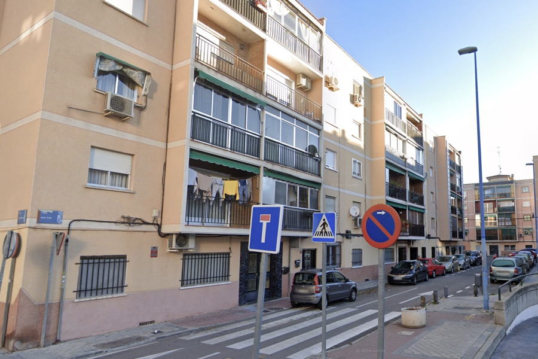

Leganés es un municipio y una ciudad española que forma parte de la Comunidad
de Madrid. Se encuentra dentro del área metropolitana de Madrid y está situada a
once kilómetros al sudoeste de la capital. Su población es de 194 084 habitantes,
lo que la convierte en la cuarta localidad madrileña más poblada y en la trigésimo
segunda más grande del país.
Fundada en 1280 como «Legamar» durante el reinado de Alfonso X el Sabio, años
después adoptó el topónimo actual, y en 1345 se incorporó como aldea al alfoz de
Madrid. En 1627 se convirtió en una villa de señorío cuando el rey Felipe IV creó el
marquesado de Leganés, y se mantuvo como tal hasta que en 1820 fueron abolidos
los privilegios feudales.
La mayor celebración en toda la ciudad se produce el 16 de agosto con la festividad dedicada a Nuestra Señora
de Butarque,
patrona de la ciudad. Las fiestas duran una semana, y a las actividades programadas por el Ayuntamiento
(tales como conciertos, feria,
encierros u orquestas) se suman las realizadas por las diversas peñas. Las siguientes en importancia son las
del 11 de octubre
por Nicasio de Reims (San Nicasio). Son organizadas entre el ayuntamiento y la Asociación de Vecinos del
barrio. Se realizan actividades
similares a las de Butarque, aunque están enfocadas especialmente en el barrio.
Cabe destacar las festividades de otros barrios. La Fortuna celebra sus fiestas por San Fortunato en la
última semana de junio,
mientras que los barrios de Zarzaquemada, Leganés Norte, El Carrascal y Vereda de los Estudiantes organizan
actividades durante la semana de San Juan.




